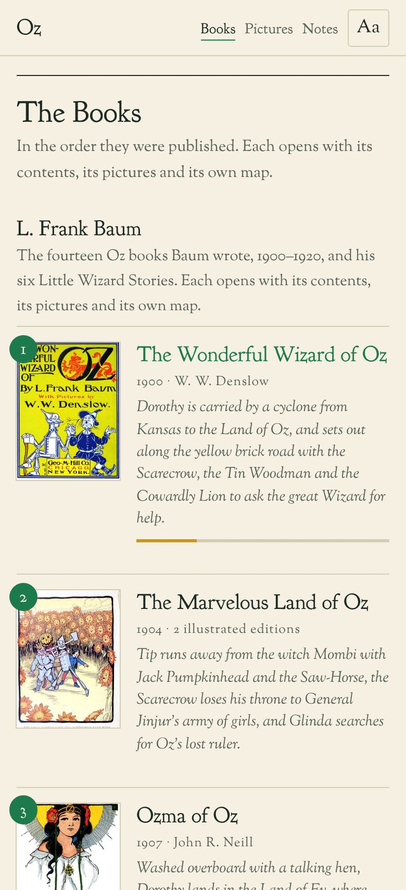

I
Thirty-two books
Baum’s fourteen Oz books and his Little Wizard Stories, the fifteen Ruth Plumly Thompson wrote after him as the new Royal Historian of Oz, and Jack Snow’s two. Each in the order it was published, with its contents, its pictures and its own map.
